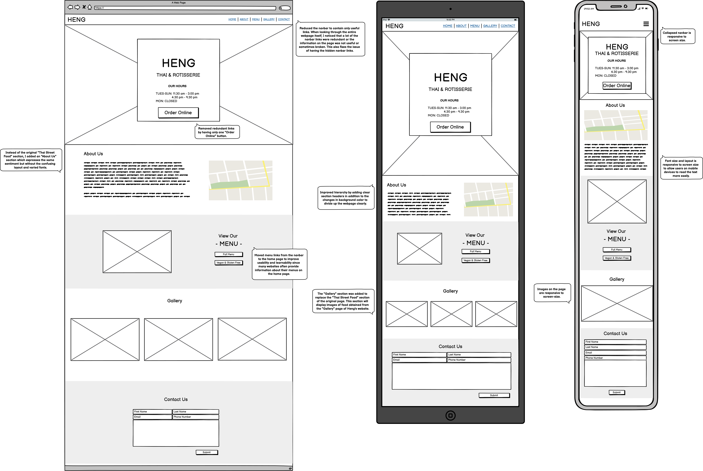
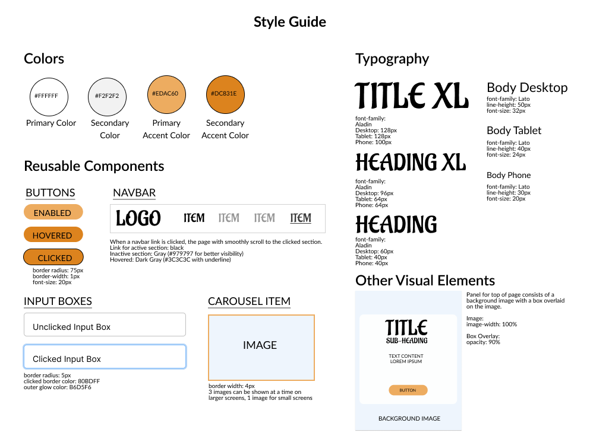

Responsive Redesign: Designing a webpage for Heng Thai & Rotisserie
BACKGROUND
In this project, I redesigned Heng Thai & Rotisserie's website to be more responsive and address existing usability issues. I chose this website because Heng is my favorite restaurant in Providence, and I believe that if it had a more user friendly website, it would bring in more customers and allow more people to taste this delicious food.
OBJECTIVE:
To better understand how to design a webpage focusing on its usability, I examined a website and analyzed its usability issues, then created both low-fidelity and high-fidelity prototypes for my new website design. I then built the website using only HTML and CSS (with Bootstrap).
First, I started by looking at the existing webpage and determining the main usability issues that could be addressed in a redesign. On the left is a screenshot of the existing webpage. You can click on the image to view an annotated image of the full webpage and its usability issues. My findings are also summarized below:
Summary: Usability Issues
Confusing section: There is a section on "Thai street food" which may be somewhat memorable but feels confusing and out of place. It doesn't seem to pertain to the restaurant directly and doesn't contain any of Heng's own photos. It also contains a variety of fonts which makes the page feel less cohesive.
Lack of hierarchy: The hierarchy on the page is confusing. The important information that a user would want to know about a restaurant (e.g. location, phone number, business hours) are all in smaller text relative to the text in the aforementioned "Thai street food section". This makes it more difficult for users to find the information they may need.
Responsiveness: All of the font sizes on mobile devices are quite small. The "Submit" button on the contact section is covered by a bottom panel on certain screen sizes, making it difficult to press. The navbar on the phone is the same as a desktop, making the links very small and hard to click.
Hidden links in navbar: The "Contact" and "Gallery" buttons in the navigation bar are hidden in "More" even though there is plenty of space in the navbar.
To examine accessibility issues, I ran the Web Accessibility Evaluation Tool (WAVE) on Heng’s webpage. Based on the results, I noticed the following concerns:
Summary: Accessibility Issues
Low contrast & empty headings: Using this tool, I found that there are 14 very low contrast errors and 7 empty heading errors. While I personally didn't find all of the text detected as being low contrast to be particularly low contrast, I can understand how users who are visually impaired may find this more difficult to read. The empty headings may also interfere with screen readers.
Language accessibility: There is only one language on the main page, although the menu is in both Thai and English on the menu page of the website. Interestingly, while the menu contains Thai the rest of the page does not, making it more difficult for Thai users to navigate.
Lack of alternative text: None of the images on the page have alternative text, which would make it more difficult for screen readers to use.
Prototyping: Hi-Fi & Lo-Fi
Low-Fidelity Prototyping
After identifying the main usability issues in the existing website, I then designed low-fidelity wireframes using Balsamiq with these usability and accessibility issues in mind:

When developing my wireframes, I had a harder time resolving the accessibility issues compared to the usability issues. I think this is because the accessibility issues I noticed are less easily solved by the layout and design of the low-fidelity prototype. Instead, accessibility features such as high-contrast text and alternative text for media elements are more easily illustrated in the hi-fi prototype or even the final website.
Style Guide & High-Fidelity Prototyping
Once I developed my wireframes, I then created a style guide consisting of the color scheme, typography, and reusable components I intended to use when developing the hi-fi prototypes. I drew inspiration from the current webpage when choosing the colors and font styles of the page. Below is my style guide:

Using the components and other visual elements from my style guide, I created the following three high-fidelity prototypes using Figma. Since I planned to use Bootstrap, I mainly used Bootstrap classes and the Bootstrap grid, which are tools built upon flexbox. Below are the three prototypes, annotated with styling decisions made to help create the desired layout:
Design Implementation: Coding the Website
Once I was happy with my hi-fi prototypes, I began to code my webpage using Bootstrap as a CSS framework. You can access the website here as well as via the embedding below:
Summary & Takeaways
Overall, this project was my first attempt at redesigning a website with design principles in mind.
I learned about how to analyze usability and accessibility issues that websites may have.
I designed wireframes and hi-fi prototypes to visualize how the redesigned responsive page would look on various devices.
I created a visual style guide for me to use when coding up the responsive webpage.
I developed the responsive webpage I designed using HTML and CSS. From this, I gained a lot more experience with creating responsive webpages using Bootstrap.